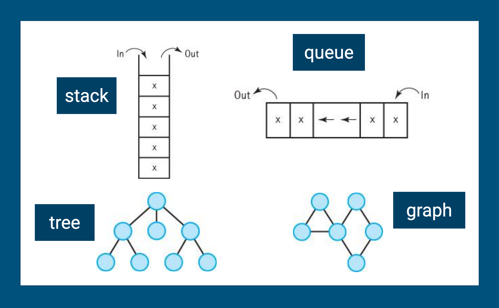

> cs 207: programming II_
Professor Leesha "Aisha" Shah
moliri: (latin, v) to endeavor, to attempt, to create
lmshah2 {at} neiu {dot} edu
CBT 105
>
syllabus
>
welcome :)
>
programming II progress map
>
student drive
>
slack

> Week 7: Recursion_
This week, we will explore an important programming technique -- recursion! Imagine an array of sorted data -- numbers. Let's say you want to search that array to see if the number 97 exists. In a worst case, the number is in the last spot, and we have to use a for loop to check each spot until we reach the end. What if there were a simpler approach to solving the problem? Could we search sub-regions within the array, and slowly narrow down our search instead of searching every spot?
Remember to complete your weekly self-assessments and submit your workshops by Friday at 11:59p.
Midterm Part 1 feedback is out! Parts 2 and 3 will be due in two weeks. If you haven't already, review your feedback, and begin implementing and testing your project designs.
> Week 9: Lists_
This week, we will explore our next data structure -- lists! You have already seen many examples of lists in practice. This week, we'll consider specific situations, like how do you add data to a sorted list? For example, how do you find the spot where the data should go? We'll also explore more complex lists, like doubly-linked lists that link forwards and backwards. These advanced implementations allow you to access data from either end of a linked list.
Remember to complete your weekly self-assessments and submit your workshops by Friday at 11:59p.
HW 3 is out and due in ~1 week. If you haven't already, begin implementing and testing your assignment.
> Week 8: Queues_
This week, we will learn about our next major data structure -- queues! Imagine data that represents people standing in a line waiting to pick up pizza. When a new person joins the line, where do they go? When someone leaves the line to walk to the counter, who goes first? We'll practice implementing data structures that support this concept of how queues work.
Remember to complete your weekly self-assessments and submit your workshops by Friday at 11:59p.
HW 3 is out, and is due in ~2 weeks! You'll also see that HW EC was released. If you complete this by the end of semester, you can get bonus points added to your HW score. See the progress map for the exact due dates.
> Week 6: Stacks_
This week, we will explore a new data structure -- stacks! Imagine your data is structured as a stack of books. If I wanted to remove data (or a book), where do I need to pull the book from? What if I want to add a book to the stack? Where would it go? We will learn how to implement these methods for a stack, and more.
Remember to complete your weekly self-assessments and submit your workshops by Friday at 11:59p.
Midterm Part 1 is due this week! Parts 2 and 3 will be due in a few weeks. If you haven't already, start to plan out how you will implement and test your project designs.
> Week 5: ADTs and Linked Lists_
This week, we will begin our deep dive into data structures! You can think of data structures as more advanced lego blocks that we can use to structure more complex code. We will learn about abstract data types (ADTs), and review our first data structure -- linked lists.
Remember to complete your weekly self-assessments and submit your workshops by Friday at 11:59p.
The midterm is now released! It comes in 3 parts. Part 1 is due in about a week! If you haven't already, read over the project brief and begin designing your code.
> Week 4: Abstract Classes and Interfaces_
This week, we will learn about how to use abstract classes and interfaces to create templates that help us structure and standardize our code. For example, if we want to design many objects to represent roles of different people in the university (e.g. Student, Faculty, Staff), we might want to design a broader abstract class that defines things that all roles will have (i.e. variables like "email").
Remember to complete your weekly self-assessments and submit your workshops by Friday at 11:59p.
HW 2 is due in about a week! If you haven't already, get started and see if you can work towards passing all your test cases.
> Week 3: Exception Handing + File Input/Output_
This week, we will explore exception and file handling. For example, how do we read or write to a text file from our code? Or if we know a bit of our code is risky (like trying to open a file that doesn't exist), how do we catch and handle those risks before it crashes our code?
Remember to complete your weekly self-assessments and submit your workshops by Friday at 11:59p.
HW 2 is now released, and due in about 2 weeks. Remember you can connect with any Peer Leader for help, or use our #help channel in Slack!
> Week 2: Inheritance + Polymorphism_
This week, we will continue start to learn about inheritance and polymorphism. As we start to define new classes and objects, how do we relate them to one another? For example, how would a student object relate to a class object, or a university object?
Remember to complete your weekly self-assessments and submit your workshops by Friday at 11:59p.
HW 1 is due in about a week! If you haven't already, get started so you can get help with bugs from your Peer Leaders! See the syllabus for more rules on homework submissions.
-->> Week 1: OOP Review_
This week, we will continue our review of OOP concepts. Specifically, we'll review how objects live in memory, encapsulation, and inheritance.
Your next Workshop session is this Thursday from 8-9a, via Zoom. Check Slack for the Zoom link! Folks who cannot attend can find recordings linked in the progress map.
As part of this course, I will challenge you to reflect on your learning process each week through the weekly self-assessments, due every Friday at 11:59p. Your first self-assessment is due at the end of this week.
HW 1 is also released this week! You may work with up to one partner on the homeworks. You get about 2 weeks to work on homeworks. Start early, so you can get help with bugs from your Peer Leaders! See the syllabus for more rules on homework submissions.
> Week 0: Orienting to the Course Ecosystem + OOP Review_
This week, your job is to orient to our course ecosystem, and review some object-oriented programming (OOP) concepts from 200.
You have each been added to our course slack, which will be our main channel of communication -- join ASAP for announcements! You will also use our student drive, where you will find things like your assignments and lecture material.
Every week, you will find lectures posted in the drive every Monday and Wednesday, starting this week! Use our programming II progress map to keep track of all lecture recordings, slides, readings, workshops, self-assessments, midterm/final deadlines each week.
You will also meet weekly with your Peer Leaders for our Workshops. Workshops take place via Zoom on Thurdays 8-9a, starting this week. Note that your first workshop assignment (W0) is due this week. Check out the programming II progress map above for more info.
See you soon!